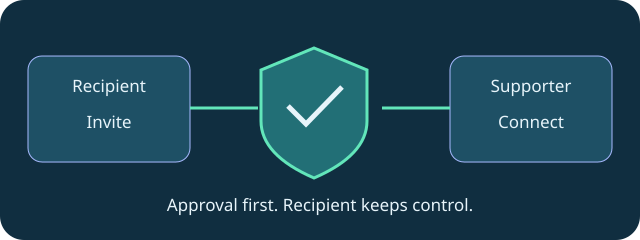

support
An invitation, an approval, a shared screen
How Boundary makes attended support a consent-first workflow.
Boundary attended support starts with the person receiving help. Send them DeskVNC Support from the upstream release page. They press Get a code, or Create invitation when no code service is configured, and approve the connection.
In DeskVNC, open Boundary support, paste the invitation and connect. Boundary prefers a direct encrypted path and uses a relay fallback when the networks call for it. The support recipient can revoke control or end the session at any time.
A shared or private Boundary code service offers a short handoff using four digit groups, such as 1234 5678 9012. The number expires after one lookup, and the recipient still approves the session. No account is required for an attended support session.
That makes a useful support story: a clear invitation, consent at the remote computer and a person who keeps the final say. Keep code-service configuration distinct from the invitation flow so readers can select the documented path for their setup.
Try the workflow
- Recipient starts DeskVNC Support and creates an invitation or code.
- Supporter opens Boundary support in DeskVNC and pastes it.
- Recipient approves, retains control over consent and ends the session when ready.

Technical reference: DeskVNC upstream documentation. Reviewed against the saved UPSTREAM-README.md snapshot.